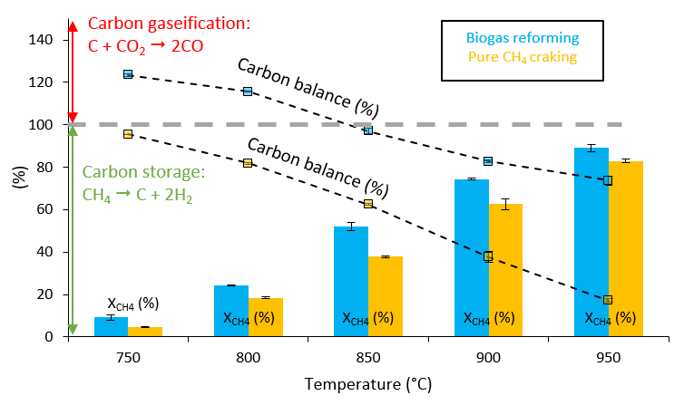
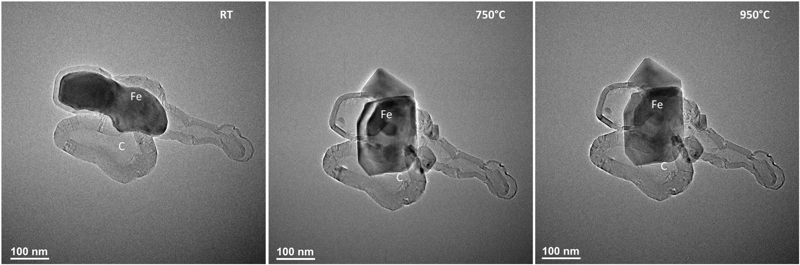

Pyrolyse du Méthane par Catalyse
Résumé du Projet : Cette section présente les travaux en cours et publiés axés sur la conversion du méthane en hydrogène et en carbone solide par catalyse, en utilisant des réacteurs à lit fluidisé. L'accent est mis sur la modélisation, le génie réactionnel et la conception des réacteurs.
Contributions Clés :
- Co-auteur d'une étude sur la réforme directe du biogaz dans des réacteurs catalytiques à lit fluidisé
- Auteur principal de travaux en cours explorant le rôle de la formation de carbone pendant la pyrolyse du méthane dans des systèmes fluidisés
- Développement de stratégies de modélisation cinétique et simulations CFD de systèmes chauffés par micro-ondes et conventionnels
- Présentation de résultats originaux lors de conférences internationales sur la CFD des lits fluidisés et le craquage par micro-ondes
Publications :

Figure 1: Comparaison de l'équilibre carbone et de la conversion du CH4 selon les conditions de réforme.

Figure 2: Image ETEM du catalyseur Fe@C sous atmosphère de biogaz (2 mbar, CH4:CO2 70:30) à différentes températures.